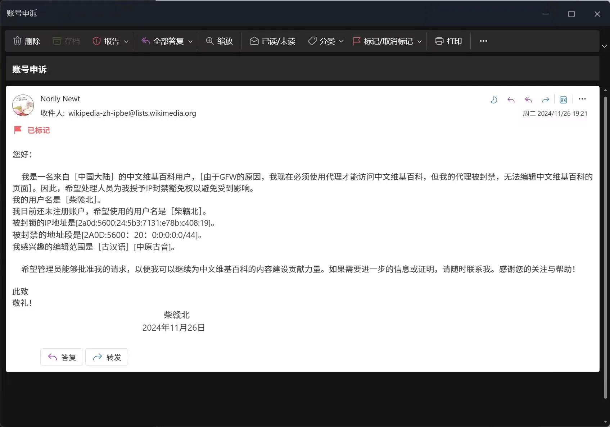
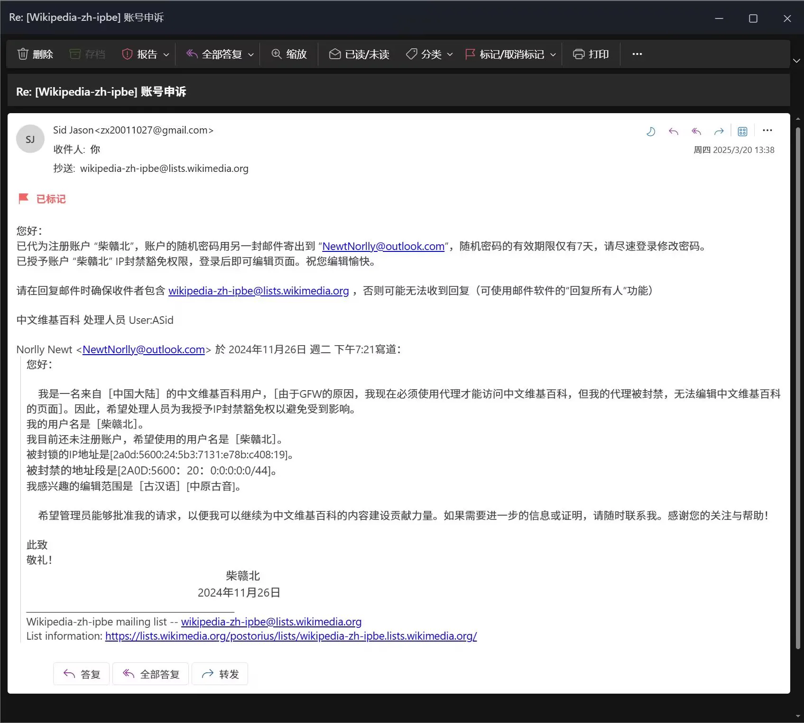
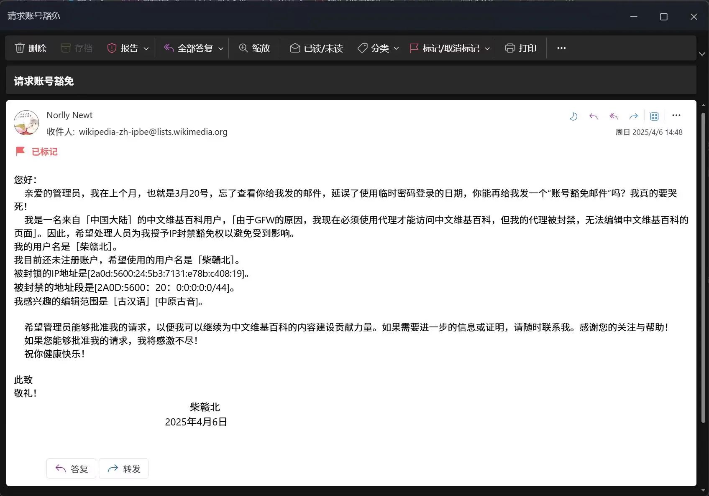
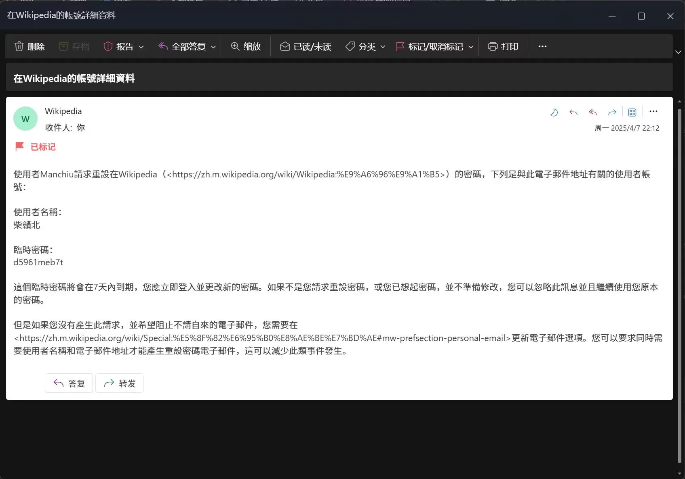
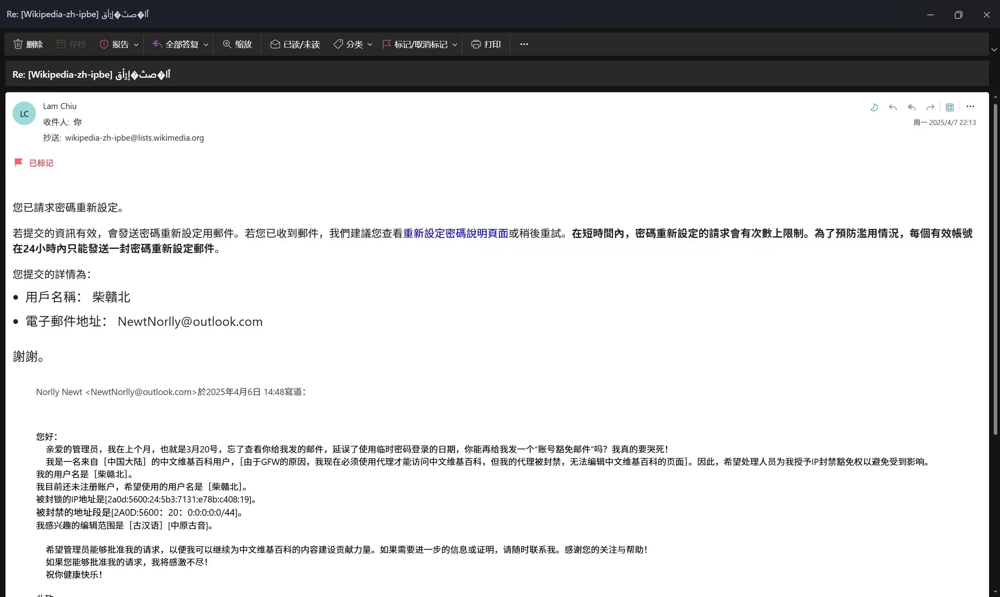
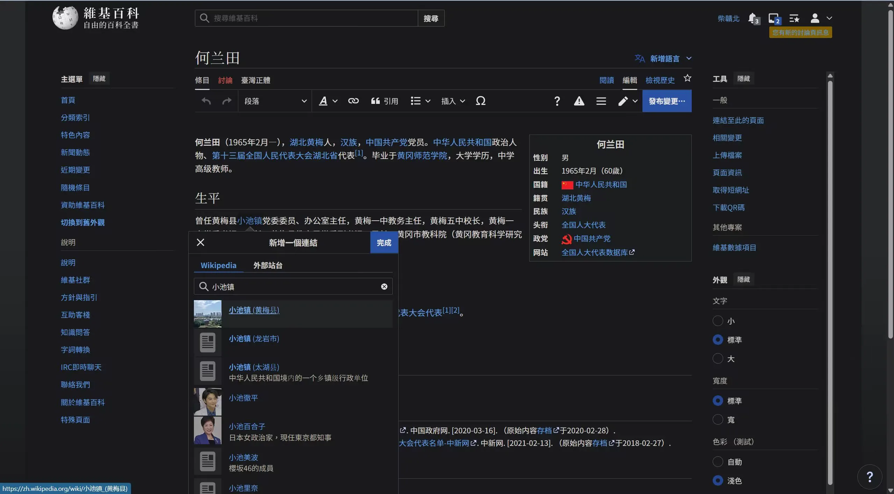
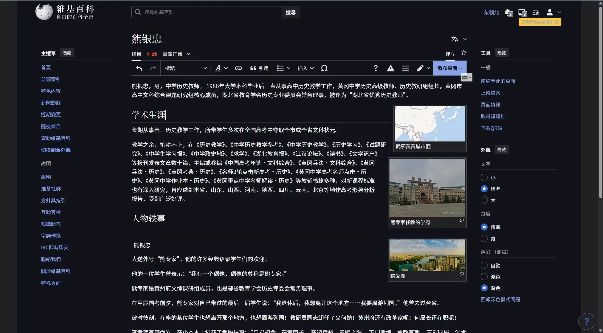
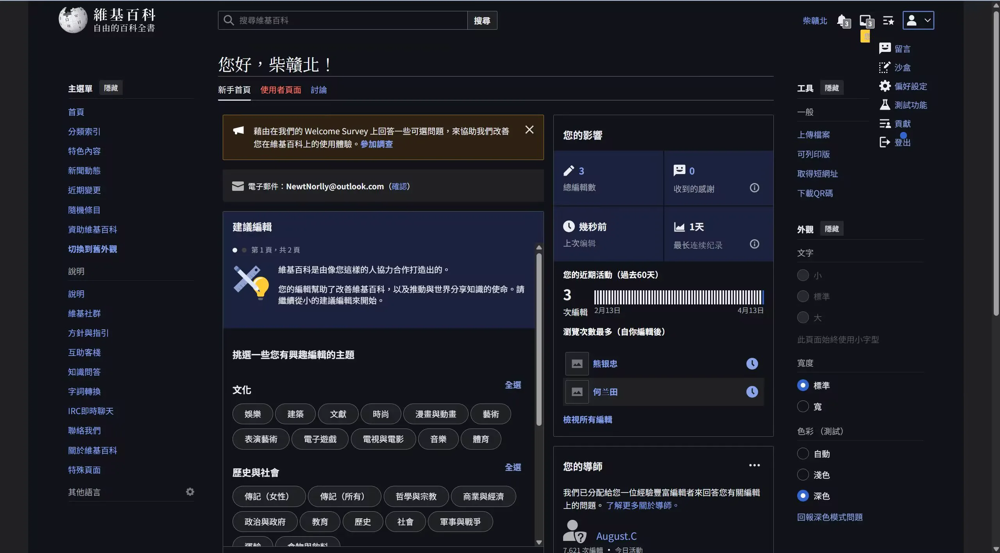
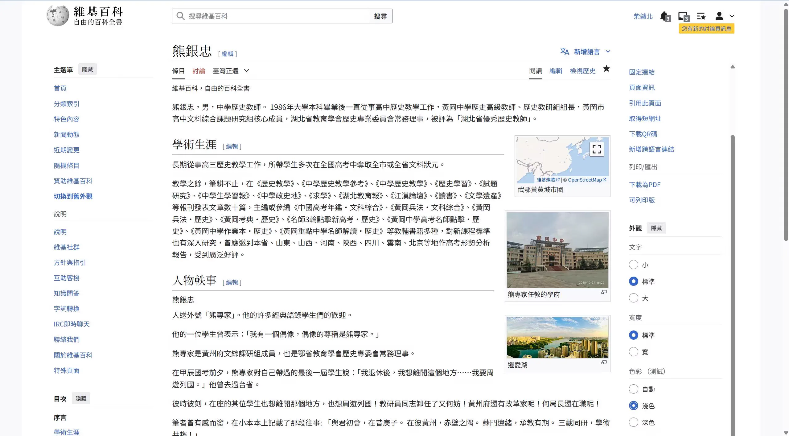

Journal · 2025-04-13
湖北省武汉市
2025年4月13日 20:23
亲爱的维基百科管理员，我想悄悄地告诉你：“我爱你全家！真的，没骗你！”
冬去春来，你总算豁免了我的账号！
我要开始无忧无虑地写词条啦！先编辑谁的词条好呢？何局长的词条不完善，我得修改一下。
有没有熊专家的词条？竟然没有！我得创建一个。字体怎么搞成“台湾正体”了？没事，问题不大。











Apr 13, 2025 20:23
Dear Wikipedia administrators, I'd like to quietly tell you: “I love your whole family! Really, no kidding!”
Winter gone and spring come, you've finally granted my account amnesty!
I'm going to start writing entries carefree! Whose entry should I edit first? Director He's entry is incomplete — I need to fix it up.
Is there an entry for Expert Xiong? There isn't! I'll have to create one. How did the font end up as “Traditional Chinese”? Never mind, no big deal.
13 avr. 2025 20:23
Chers administrateurs de Wikipédia, je voudrais vous glisser à l'oreille : « J'aime toute votre famille ! Vraiment, sans blague ! »
L'hiver passé et le printemps venu, vous avez enfin accordé l'amnistie à mon compte !
Je vais me mettre à rédiger des articles sans souci ! Par quel article commencer ? Celui du directeur He est incomplet, je dois le corriger.
Existe-t-il un article sur l'expert Xiong ? Pas du tout ! Je dois en créer un. Pourquoi la police est-elle passée en « chinois traditionnel » ? Peu importe, ce n'est pas grave.
13.04.2025 20:23
Liebe Wikipedia-Administratoren, ich möchte euch leise sagen: »Ich liebe eure ganze Familie! Wirklich, ohne Spaß!«
Winter vorbei, Frühling gekommen — ihr habt meinem Konto endlich Amnestie gewährt!
Ich werde nun unbeschwert Artikel schreiben! Wessen Artikel soll ich zuerst bearbeiten? Der von Direktor He ist unvollständig, den muss ich überarbeiten.
Gibt es einen Artikel über Experte Xiong? Nein! Ich muss einen anlegen. Wie ist die Schriftart auf »Traditionelles Chinesisch« geraten? Egal, nicht schlimm.